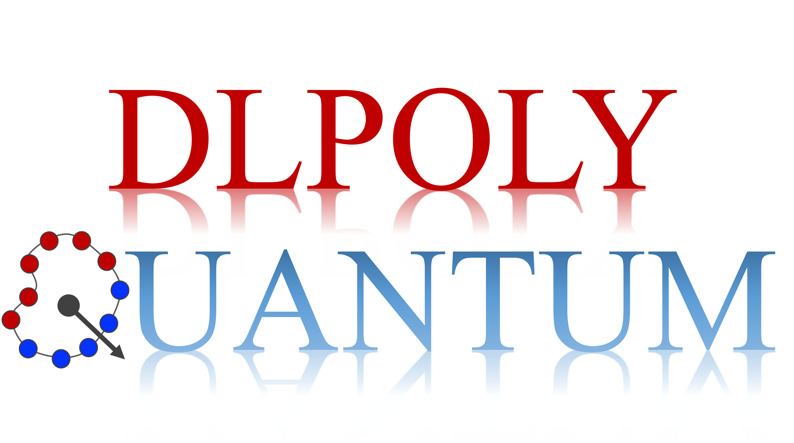

Publications † Equal Contribution     * Corresponding Author 

DL_POLY Quantum 2.1 Software: A suite of real-time path integral methods for the simulation of dynamical properties and vibrational spectra
N London, D K Limbu , M O Faruque, M R Momeni* , F A Shakib*
Submitted 16 link pdf
h-CMD: An efficient hybrid fast centroid and quasi-centroid molecular dynamics method for the simulation of vibrational spectra
D K Limbu , N London, M O Faruque, M R Momeni* Journal of Chemical Physics 162, 15 link pdf
High-Throughput Screening, Crystal Structure Prediction, and Carrier Mobility Calculations of Organic Molecular Semiconductors as Hole Transport Layer Materials in Perovskite Solar Cells
M O Faruque, S Akter, D K Limbu , K V Kilway, Z Peng, M R Momeni*
Crystal Growth & Design, 14 link pdf
DL_POLY Quantum 2.0: A modular general-purpose software for advanced path integral simulations
N London† D K Limbu † * , F A Shakib*
Journal of Chemical Physics 160, 13 link pdf
SHARP pack: A modular software for incorporating nuclear quantum effects into non-adiabatic dynamics simulations
D K Limbu , F A Shakib*
Software Impacts, 12 link pdf
Effects of Defects and Presence of Open-Metal Sites on the Structure and
Y Shi, D K Limbu , Z Zhang, M R Momeni, F A Shakib*
Journal of Chemical Information and Modeling, 11 link pdf
Real-time dynamics and detailed balance in ring polymer surface hopping: The impact of frustrated hops
D K Limbu , F A Shakib*
The Journal of Physical Chemistry Letters, 10 link pdf
In Silico High-Throughput Design and Prediction of Structural and Electronic Properties of Low-Dimensional Metal–Organic Frameworks
Z Zhang, D S Valente, Y Shi, D K Limbu , M R Momeni, F A Shakib*
ACS Applied Materials & Interfaces, 9 link pdf
Water Induced Structural Transformations in Flexible Two-Dimensional Layered Conductive Metal–Organic Frameworks
Y Shi, M R Momeni, Y J Chen, D K Limbu , Z Zhang, F A Shakib*
Chemistry of Materials, 8 link pdf
Ab initio hydrogen dynamics and the morphology of voids in amorphous silicon
P Biswas,* D K Limbu †
physica status solidi (b), 7 link pdf
Disorder by design: A data-driven approach to amorphous semiconductors
D K Limbu , S R Elliott, R Atta-Fynn, P Biswas*
Scientific Reports, 6 link pdf
Ab initio density-functional studies of 13-atom Cu and Ag clusters
D K Limbu , M U Madueke, R Atta-Fynn, D A Drabold, P Biswas*
Journal of Physics: Conference Series, 5 link pdf
Atomistic simulation of nearly defect-free models of amorphous silicon:
D K Limbu ,* R Atta-Fynn, P Biswas
MRS Advances, 4 link pdf
Information-driven inverse approach to disordered solids: Applications to
D K Limbu , R Atta-Fynn, D A Drabold, S R Elliott, P Biswas*
Physical Review Materials, 3 link pdf
Structural properties of transition-metal clusters via force-biased
D K Limbu , P Biswas* Physical Review B, 2 link pdf
Structure of transition metal clusters: A force-biased Monte Carlo approach
D K Limbu , P Biswas*
Journal of Physics: Conference Series, 1 link pdf